Chapter 11 addresses the various aspects that fall under the concept of Power Quality. It covers voltage during slow voltage variations, dips, flicker, asymmetry, and harmonics.
The quality of the mains voltage and current is of great international interest. It is important to handle these concepts in the same way internationally, so that devices continue to function properly in the event of deviations in voltage, current, or frequency within the specified limits. Different quality definitions are used worldwide. For instance, there is varying terminology (Cigré, 2009):
The quality of the mains voltage is determined based on deviations from the ideal sine wave, amplitude, three-phase symmetry, and frequency. These deviations from the ideal voltage are caused by changes in load, disturbances from equipment, and the occurrence of short circuits. Although all disturbances occur randomly in time and place, causing the measured deviations to vary greatly in magnitude, the quality requirements are assessed at the transfer point of a connection. Because the focus is not solely on 'voltage,' the term 'Power Quality' is used.
The requirements regarding Power Quality are further described and established in international and harmonized standards, such as EN 50160. This allows for consistent and unambiguous communication between the customer, manufacturer, regulator, and electricity company. In the Netherlands, the regulator has established the quality aspects in the Grid Code. The grid operator monitors the quality using a Power Quality Monitoring system that has been jointly developed and established by the grid operators.
At the connection point (or transfer point), the systems of the grid operator and the connected party converge, resulting in mutual influence. On one hand, disturbances at the connected party's end, due to a short circuit or the activation of large devices, affect the electricity grid. On the other hand, fluctuations caused by short circuits and switching operations in the transmission and distribution networks are noticeable to the connected parties.
The properties of the connected party's system affect the voltage quality in the distribution network, and the voltage quality affects the proper functioning of the connected party's equipment. Therefore, international standards specify the quality criteria that the consumed power and the voltage at the connection point must meet. Additionally, it is specified within which margins the connected party's equipment must operate. Table 11.1 provides an overview of some aspects related to the connection point.
Distributienet |
Aansluitpunt |
Network/installation of the connected party |
Property of the network operator |
Network operator / customer |
Property of the customer |
Just strong enough |
Network impedance determined by the grid |
Load bound to maximum value |
Delivers voltage within margins |
Voltage within margins |
Let the current flow |
Requirements regarding voltage quality (EN 50160) |
Interactie |
Requirements regarding current quality (IEC 61000-3-2 and 12) |
The distribution network, owned by the network operator, supplies the network of the connected party through the connection point. The distribution network must be electrically strong enough to feed the installations of all connected parties. The network impedance (or short-circuit impedance) at the connection point is a measure of the strength of the network.
The distribution network delivers a voltage that remains within the specified margins at the connection point. This applies to any current drawn by the connected parties within the specified limits. The quality of the voltage from the network and the quality of the current through the devices of the connected parties are prescribed in international standards.
Depending on the various installations or equipment of the connected party, different types of disturbances can be expected. Some examples are shown in table 11.2.
Installatie |
Voltage variations |
Over-voltage |
Dips |
Flikker |
Asymmetry |
Harmonics |
Households and SMEs |
+ |
+ |
+ |
|||
PV installation |
+ |
+ |
+ |
|||
Micro-CHP |
+ |
+ |
+ |
|||
Warmtepompen |
+ |
+ |
+ |
+ |
||
SMEs, stores |
+ |
+ |
||||
Greenhouse with assimilation lighting and decentralized generation |
+ |
+ |
+ |
|||
Large decentralized generation |
+ |
|||||
Steenfabriek |
+ |
+ |
||||
Tractievoeding |
+ |
+ |
+ |
|||
Windturbine |
+ |
+ |
+ |
Table 11.2 shows that the equipment of the connected parties affects the voltage, symmetry, and frequency. To mitigate the adverse effects that can occur due to significant deviations, requirements have been set for Power Quality. The elements that fall under this are indicated in Table 11.3.
In a European context, research has been conducted on the costs resulting from poor Power Quality (Cired, 2007). The study estimated a total Power Quality-related loss of 152 billion EUR per year for 25 EU countries. The cost components include, among others, man-hours, lost work, process delays, damaged equipment, and fines. Broken down by Power Quality aspect, the following distribution emerges:
The regulator in the Netherlands uses the criteria described in Table 11.3 to assess the quality of voltage. These criteria are based on the international standard EN 50160. On a few points, the regulator has slightly tightened the criteria from this standard in its Grid Code. These quality requirements in the Grid Code used in the Netherlands apply to all low-voltage (LV) and medium-voltage (MV) distribution networks up to 35 kV. In the table, the nominal voltage is indicated byUnom. For low-voltage networks,Unomequal to 230 V. For medium-voltage networks, it isUnomequal to the value specified in the contracts with the customersUc).
The limits, as mentioned in table 11.3 and the Grid Code, indicate the compatibility level within which all connected devices must be able to function properly. For example, the compatibility level for devices concerning the grid voltage in low-voltage networks is plus or minus 10% of the nominal voltage, which is between 207 V and 253 V. The grid operator must ensure that the compatibility level is not exceeded. Because distribution networks are designed for many years, a safety margin is used. This safety margin forms the basis for the planning level, which applies stricter boundary requirements. For instance, the planning level for the upper limit of the grid voltage in low-voltage networks can be 245 V (7%).
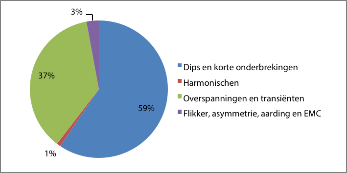Kwaliteitsaspect |
Criterium |
Frequentie |
|
Slow voltage variation |
|
Rapid voltage variation |
|
Asymmetrie |
|
Harmonischen |
|
The frequency is regulated internationally for all interconnected grids in Western Europe.
Since most distribution networks are interconnected and supplied from the high-voltage grid, the frequency is not directly affected by the switching on and off of a single load or generator. However, the EN 50160 standard prescribes the frequency limits for interconnected distribution networks. In the Grid Code, these limits are further tightened:
According to the Grid Code, the following variations are permissible for slow voltage variations in LV networks and MV networks up to 35 kV:
In the hourly and minute range, slow voltage variations are commonplace. These variations occur due to changes in load and generation, as well as voltage regulations at transformers and generators. When designing the distribution network, the voltage control margin is taken into account to keep deviations from the nominal voltage within set limits. The nominal voltage in the low-voltage (LV) networks is 230 V. The nominal voltage in the medium-voltage (MV) networks is the value specified in the contracts with customers. According to table 11.3, the voltage may deviate up to 10% from the nominal value for 95% of the time. However, the voltage must not be lower than 15% below the nominal value. In an LV network, this corresponds to 196 V. This low value is included to allow for a temporary voltage drop in exceptional situations, such as during network switching for fault handling or maintenance. When the voltage is outside the specified limits, devices may not function properly and could be damaged. Additionally, when determining the planning level, the voltage drop in the customer's installation, which can amount to 5%, is also considered.
According to chapter 9, the voltage variation in a distribution network is caused by a combination of the transport of active power (P) and reactive power (Q):
[ |
11.1 |
] |
Because the R/X ratio in a medium voltage (MV) network is approximately 1, the voltage variation is caused almost equally by the transport of active power (P) and reactive power (Q). Due to the high R/X ratio in low voltage (LV) networks, the voltage variation in those networks is mainly caused by the transport of active power (P). Since the voltage regulation of synchronous generators operates by varying the reactive power, the generators in distribution networks are usually not equipped with voltage regulation but with a constant power factor (cos(φ)) control.
Slow voltage variations are caused, among other things, by load variations resulting from the daily load pattern. But also, when new customers are connected, the load will structurally change. When the load increases, the voltage will drop. If this drop becomes too large, the grid operator will take measures, such as laying an additional cable or adjusting the voltage level in the feeding transformer. Customer behavior can also lead to an increase in the voltage level. Examples of this include the installation of a decentralized generation unit and the large-scale installation of solar panels. In this context, we speak of a planning level. Networks are designed for 30 to 40 years and are usually kept in operation even longer. When designing a new network, the designer considers:
When calculating the voltage variations for a location in the distribution network, the following factors must be taken into account:
Voltage variations are quantified by the depth of the voltage variation ΔU. This is usually expressed as a percentage or per unit value of the nominal voltage. Additionally, there is the term "residual voltage," which refers to the remaining voltage. This is equal to the nominal voltage minus the voltage variation and is also expressed as a percentage or per unit of the nominal voltage.
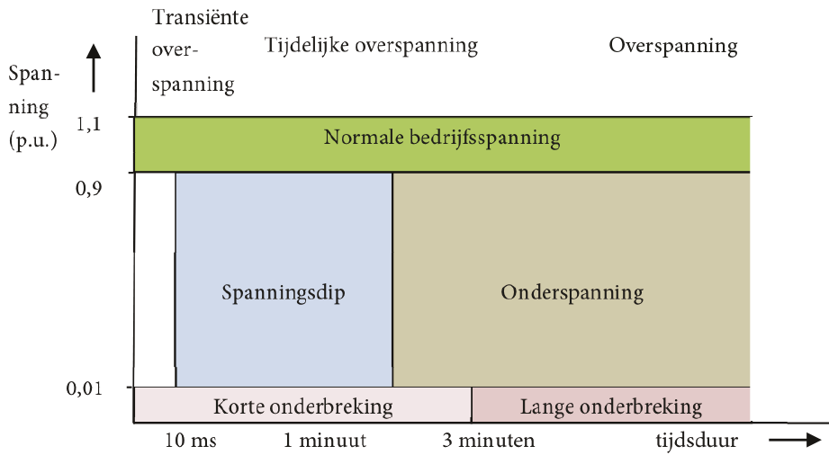With regard to voltage variations, multiple phenomena are possible with different degrees of disturbance and duration. These are briefly summarized in Figure 11.2.
In the case of rapid voltage variations, we refer to dips and flicker. A voltage dip is a short (temporary) and sudden drop in voltage. The drop must be at least 10% of the prevailing voltage level at that moment to be considered a dip. The voltage must return to the normal level within a minute. In practice, most dips last no longer than a few seconds. Figure 11.3 provides an example of the time course of a voltage dip of ΔU = 20% with a remaining voltage of 80%.
Additionally, flicker is the phenomenon of repeated voltage variations that cause annoying flickering in lighting. The annoying voltage variations can be less than 10%. Incandescent and halogen lighting, in particular, are greatly affected by flicker. Flicker is caused, among other things, by the repeated starting of motors.
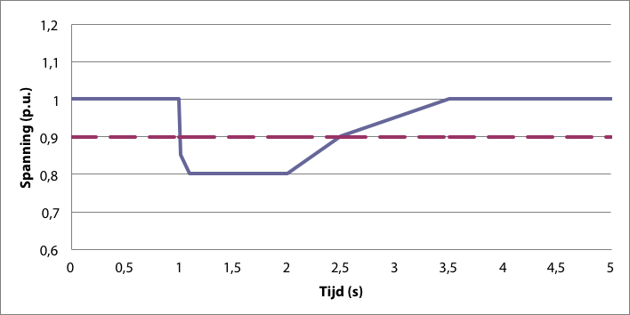The Grid Code and EN 50160 do not set requirements for voltage dips. However, immunity curves, such as the ITIC curve for IT installations, describe the extent of dips (depth and duration) that specific devices or processes must be able to withstand (Cobben, 2009). It is inevitable that dips occur because voltage dips are caused by abnormal situations, such as short circuits in the electrical network. Additionally, the switching on of large devices, such as transformers and industrial motors, can lead to voltage dips.
The brief loss of the desired voltage level can cause sensitive electronic devices, such as computers, frequency converters, and magnetic switches, to fail. In the case of deep dips, motors can come to a halt. If the connected party wants to ensure that their process is not interrupted by significant voltage dips, they must take measures themselves, such as installing a UPS system at a data center or hospital.
The primary cause of dips is a short circuit in a network. The depth of the dip is determined by the type of short circuit and the electrical distance to the short circuit location. A phase-to-ground short circuit in a floating MV network is not noticed in the LV network. However, if the MV network is impedance-grounded, a phase-to-ground short circuit will result in a dip in the LV network. A short circuit in the LV network usually leads to a voltage dip in the other LV branches behind the same distribution transformer, but it is barely noticeable in the MV network. The duration of the dip is determined by the time needed to disconnect the short circuit. Figure 11.4 provides an example of a voltage dip due to a short circuit.
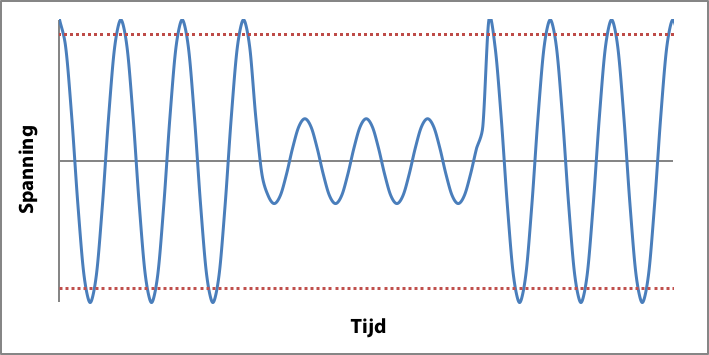Based on the network in figure 11.5, the impact of short circuits on the voltage is explained.
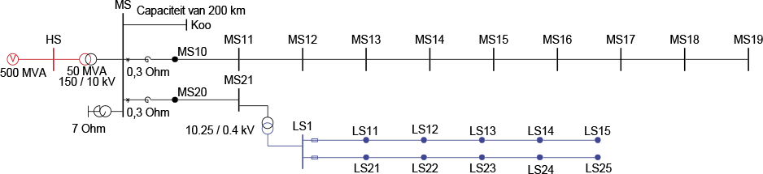The network consists of an MV string with 9 distribution stations MS11 through MS19. Each MV cable is of the type 3x150 Al XLPE 6/10 and is 1000 meters long. The cable impedance is 0.208+j0.093 Ω/km and the homopolar capacitance is 0.37 μF/km. The MV string is fed through a choke coil with Snom= 5.54 MVA and uk= 1.66%, making the reactance equal to 0.3 Ω. The transformer in the substation has the following parameters: transformation ratio = 150 kV / 10 kV, Snom= 50 MVA, uk= 20%, Pk= 200 kW, configuration: YNd5. The neutral point transformer on the MV busbar of the substation has a homopolar reactance of 7 Ω. On the same MV busbar, a virtual connection to the equivalent node K_eq has been established with a homopolar capacitance of 72 μF, representing a total of 200 km of MV cable from 19 other strands connected to the substation. The supply at the 150 kV level has a nominal short-circuit power of 500 MVA with an R/X ratio of 0. The LV network is fed from node MS21, which is located behind an MV cable with a length of 1000 meters. The distribution transformer is a 400 kVA 10.25/0.4 standard transformer. Each LV cable is of the type 4x150 VVMvKsas/Alk and is 100 meters long. The normal impedance is 0.206 + j0.079 Ω/km and the homopolar impedance is 0.60 + j0.15 Ω/km.
In the MV string, a three-phase short circuit is installed at each node, starting at node MS10, directly behind the choke coil. Node MS19 is located 9000 meters away from the substation. Figure 11.6 provides the values of the three-phase short-circuit current.Ik"as a function of the distance from the fault location to the substation.
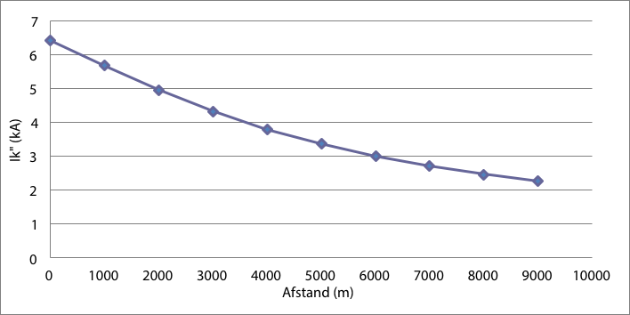For each short circuit, the voltage on the medium-voltage (MV) busbar of the substation can be calculated. The voltage drop will be noticeable in all other MV branches connected to the same MV busbar. A remaining voltage lower than 0.9 pu is considered a dip. Figure 11.7 shows the values of the remaining voltage on the MV busbar of the substation as a function of the distance from the fault location to the substation. It is evident that in this network, every three-phase short circuit leads to a dip.
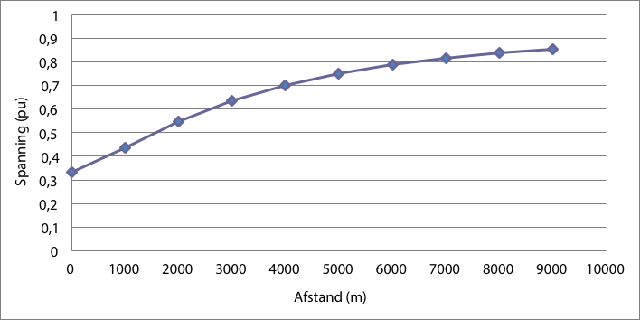The same calculations can be performed for short circuits in the LV network. Short circuits in a particular branch are noticeable in all other LV branches connected to the common distribution transformer. Figure 11.8 shows the values of the three-phase short-circuit current.Ik"as a function of the distance from the fault location to the substation. Here, the short circuits are applied at nodes LS1 and LS11 through LS15, from 0 to 500 meters distance from the substation (node LS1).
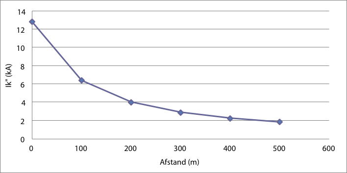For each short circuit, the voltage on the LV busbar of the substation has been calculated. A voltage drop on this busbar is noticeable in all other connected LV feeders. Figure 11.9 shows the values of the remaining voltage on the LV busbar of the substation as a function of the distance from the fault location to the substation. From this, it can be concluded that in this network, the tipping point for whether or not a dip occurs lies between nodes LS14 and LS15 at a distance of 400 and 500 meters from the substation (node LS1), respectively.
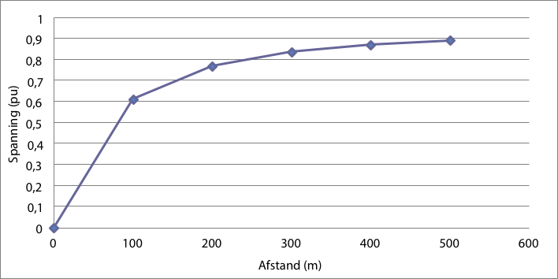In the LV network, the impact of a phase-to-neutral ground fault can also be calculated.
The return current flows through the sheath of the LV cable and through the ground. Since the homopolar impedance of the cable is greater than the normal impedance, the short-circuit current is smaller than the three-phase short-circuit current. Figure 11.10 provides the values of the phase-to-ground short-circuit current.Ik"as a function of the distance from the fault location to the substation (node LS1).
For each phase-to-ground fault, the voltage on the LV busbar of the substation has been recalculated. A voltage drop on this busbar is noticeable in all other connected LV feeders. Figure 11.11 shows the values of the remaining voltage on the faulted phase of the LV busbar of the substation as a function of the distance from the fault location to the substation. From this, it can be concluded that for phase-to-ground faults in this network, the tipping point for whether or not there is a dip lies between nodes LS13 and LS14, at distances of 300 and 400 meters from the substation, respectively.
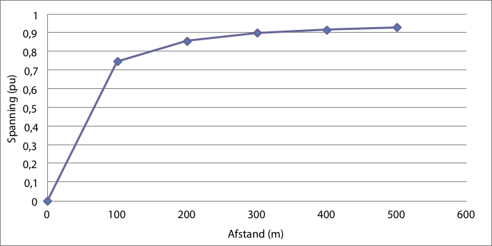In a voltage dip analysis, the remaining voltages of all nodes in the network are calculated for all possible short circuits. Subsequently, the duration of the dips can be determined based on the existing protections. By combining this data with the reliability data of the network components, where a fault leads to a short circuit, a picture emerges of the expected number of dips per year. The results can be categorized into discrete interval classes of time and voltage, as shown in Table 11.4, in order to compare with the immunity curves.
The classification into discrete interval classes is illustrated using the example network in Figure 11.5. Besides the depicted feeders behind node MS10, the 50 MVA transformer also supplies 19 other, identical feeders in this example, of which only the homopolar capacitance is modeled. For each of these feeders, the results shown in Figures 11.6 through 11.11 for short-circuit current and residual voltage as a function of the distance from the fault location apply in principle.
In the example network of Figure 11.5, the setting of the maximum current-time protection on the MV busbar of the substation for the feeder to MS10 is: I>/T>= 410 A / 1.6 s and I>>/T>>= 2000 A / 0.6 s. This means that in the MV network, according to the results in figure 11.6, all three-phase short circuits are disconnected at 0.6 s. This disconnection time is classified in the time interval of 0.5 to 1.0 s. For lines longer than 9 km, the short-circuit current may be lower than 2000 A, resulting in disconnection at 1.6 s.
The failure frequency of each MV cable is set at 0.025 per km per year. This means that the failure frequency of each 1 km long MV cable in figure 11.5 is equal to 0.025 per year. The failure frequency of an MV string with 9 cables is then equal to 9 x 0.025 = 0.225 per year. Since there are a total of 20 (=19+1) of these MV strings, the total failure frequency is equal to 20 x 0.225 = 4.50 per year.
In table 11.4, the example is calculated for the network, which consists of 20 identical MV strings, each with 9 cables and substations, where each cable has the same failure frequency. The reliability of all MV cables is set at 0.025 per km per year. In the example, only three-phase short circuits are calculated, in the middle of all MV cables. When all calculated remaining voltages are classified into time intervals and voltage intervals of 0.1 pu, table 11.4 is created. According to this table, the expected number of dips, where the remaining voltage is between 0.8 and 0.9 pu, is equal to 1.50 per year. The results in this table can be compared with the ITIC curve, which defines the threshold values for IT equipment (Cobben, 2009).
The sum of all voltage dip frequencies in table 11.4 is equal to 4.5, which is equal to the total failure frequency, because all short circuits lead to a voltage dip.
0.01 |
0.02.. |
0.1.. |
0.3.. |
0.5.. |
1.. |
2.. |
5.. |
> |
|
0.8 .. 0.9 pu |
1,500 |
||||||||
0.7 .. 0.8 pu |
1,000 |
||||||||
0.6 .. 0.7 pu |
0.500 |
||||||||
0.5 .. 0.6 pu |
0.500 |
||||||||
0.4 .. 0.5 pu |
0.500 |
||||||||
0.3 .. 0.4 pu |
0.500 |
||||||||
0.2 .. 0.3 pu |
|||||||||
0.1 .. 0.2 pu |
|||||||||
0.01 .. 0.1 pu |
Since short circuits in an LV network also lead to a dip in the other LV branches connected to the same distribution transformer, it is useful to include the voltage dip analysis on the LV network as well. In the following example, it is assumed that the same failure frequencies per km apply to the LV cables as to the MV cables, so that a similar table can be calculated for, for example, the node LV1, directly on the LV side of the distribution transformer. In the example, the LV branches are protected with a fuse type 200 A gL/gG. The disconnection characteristic is given in figure 11.12.
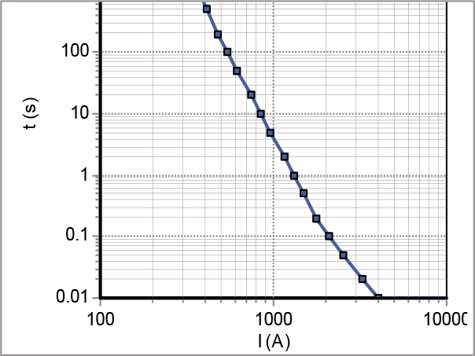In the example, only three-phase short circuits in the middle of the cables are calculated once again. According to figure 11.8, all short circuits lead to a disconnection. The total failure frequency of the two LV branches is then equal to:f = 2 ⋅ 5 ⋅ 0.0025 = 0.025per year.
Every short circuit in the LV network is disconnected by a fuse, which, due to selectivity, disconnects faster than the protection of the MV network. The disconnection time depends on the short-circuit current and thus on the location of the fault.
Table 11.5 shows that the residual voltage at node LS1 experiences dips resulting from short circuits in the MV network, classified within the time interval of 0.5 to 1 second. The residual voltage also experiences dips caused by short circuits in the LV network, classified within the time intervals of 0.01 to 0.3 seconds.
0.01.. |
0.02.. |
0.1.. |
0.3.. |
0.5.. |
1.. |
2.. |
5.. |
> |
|
0.8 .. 0.9 pu |
0.005 |
0.005 |
0.005 |
1,500 |
|||||
0.7 .. 0.8 pu |
0.005 |
1,000 |
|||||||
0.6 .. 0.7 pu |
0.500 |
||||||||
0.5 .. 0.6 pu |
0.500 |
||||||||
0.4 .. 0.5 pu |
0.005 |
0.500 |
|||||||
0.3 .. 0.4 pu |
0.500 |
||||||||
0.2 .. 0.3 pu |
|||||||||
0.1 .. 0.2 pu |
|||||||||
0.01 .. 0.1 pu |
According to the Grid Code, the following applies to rapid voltage variations in low-voltage networks and medium-voltage networks up to 35 kV:
The frequent switching on and off of large loads, such as welding equipment, pumps, heavy (industrial) motors, melting furnaces, and medical equipment, leads to rapid voltage variations. These rapid voltage variations can cause 'flicker.' This is a visual phenomenon caused by rapid changes in the light intensity of electric lighting. Flicker does not generally cause damage to equipment but can cause irritation in people. Due to the properties of the human eye, flickers with a frequency of up to 35 times per second (2100 times per minute) can be perceived.
The tricky thing about flicker is that not everyone has the same level of perception. Internationally, the IEC 61000-3-7 standard specifies at what frequency and form of a voltage change the flickering of a 60 Watt incandescent lamp is perceived by half of the people. In this case, it is referred to as a short-term voltage quality parameter.Pst= 1.
Pstis the flicker level determined over 10 minutes. The flicker curve in figure 11.13 indicates the threshold for short-term voltage variations that are still acceptable for perceptible frequencies. For the entire curve, the following applies:Pst= 1.
For 0.2 to 30 switchings per minute, where the current changes in a stepwise manner, the Pstare calculated using a formula derived from IEC 61000-3-7 (Cobben, 2009):
[ |
11.2 |
] |
with:
| d | voltage dip (%) |
| r | number of switchings per minute |
According to this formula, with 3 switchings per minute and a voltage dip of 2%, the Pstequal to 1. In addition to the short-term index, the long-term index (P lt)ltdefined, which can be calculated from the average of 12 consecutive Pst-values. Since Pstis based on 10-minute measurements, Pltbased on two hours.
[ |
11.3 |
] |
Flicker can be measured with a flicker meter, which is specified in IEC 61000-4-15. There is a violation of the quality criteria from the Grid Code when the Plt-value is greater than 1 for more than 5% of a week. The Plt-value must not exceed 5 in any case.
The above describes the requirements regarding the Pstand the Pltin the grid. These values arise from the fluctuations present in the grid due to various causes (the so-called background flicker) and the contribution of the connected users. The purpose of the Grid Code is to use quality indicators such as Pstand Pltto obtain a fair assessment of the contribution to grid pollution. The grid operator and the individual users each contribute to the flicker in the grid with their own behavior. The consequences for the flicker depend on the grid impedance. The requirements used in the Grid Code apply to the total flicker occurring. In the following examples, the flicker caused by an individual user is determined. This contribution is indicated by ΔPstand ΔPlt. With the background flicker present in the grid (Pst,backgroundand Plt,background), it can be determined whether the requirements set in the Netcode are met at the connection point. The method by which the contribution to the flicker is summed with the background flicker is described later. The Netcode limits the maximum contribution of connected users to the Pstand the Pltby the requirement: ΔPst≤ 1.0 and ΔPlt≤ 0.8. When connecting a customer to the low-voltage network, it must be assessed whether the occurring inrush currents in relation to the network impedance can cause disturbances. The determination of the contribution of a connected user is further elaborated with the help of an example.
For calculating the voltage dip, a distinction is made between the switching on of a symmetrical three-phase load and a single-phase load. The calculation is explained using one of the low-voltage lines from figure 11.5. These lines and their distribution transformer are detailed in figure 11.14.
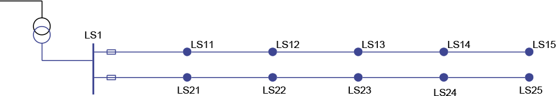The cable used is of the type 4x150 VVMvKsas/Alk with a 50 mm2Copper earth screen. The total length from the distribution transformer to the end of the line is 500 m. The voltage dip is calculated for an inrush current of 16 A with a power factor (cos(φ)) of 0.8. The equivalent circuit for switching on a three-phase load is shown in figure 11.15. In this model, the transformer impedance is neglected, so the voltage at the terminals of the distribution transformer does not change when the load is switched on. The transformer is modeled with a voltage source.Utr. The load to be switched on is modeled with a current source.
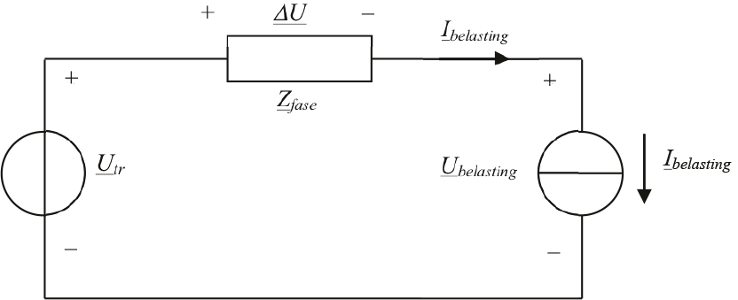Since the load is three-phase symmetrical, only the impedance of the phase conductors plays a role in calculating the voltage dip. As a result of the load currentIbelastinga voltage dip occursΔUover the cable. The following applies:
[ |
11.4 |
] |
The impedance of the phase conductors of the cable can be derived from the manufacturer's brochure. For the specified type, the following applies for a length of 500 meters:Zfase= 0.103 + j0.040 ΩAssuming that the voltage at the transformer terminals is the reference, with a magnitude |Utr| =231 Vand an angle equal to zero, applies to a load current of 16 A and a cos(φ) of 0.8:
[ |
11.5 |
] |
The voltage dip is then equal to the voltage across the phase impedance:
[ |
11.6 |
] |
The absolute value of the voltage at the load then becomes:
[ |
11.7 |
] |
The absolute value of the voltage dip is equal to: |ΔU| =1.8 V. This can also be approximated by the imaginary term ofΔUnegligible:
[ |
11.8 |
] |
The 'measured' voltage dipdmax,3f,measuredis equal to:
[ |
11.9 |
] |
If the load is switched on, for example, twice per minute, the 'measured' ΔPstaccording to formula 11.2 equal to:
[ |
11.10 |
] |
The replacement diagram for switching on a single-phase load is shown in figure 11.16. The transformer is modeled with a voltage source.UtrAs in figure 11.15, for convenience, the transformer impedance is neglected, so when the load is switched on, the voltage at the terminals of the distribution transformer does not change. This is not always justified, such as when starting a large motor that is directly connected to the transformer terminals. In that case, the transformer impedance must also be included in the calculation. The load is modeled with a current sourceIbelasting).
Since the load is connected between phase and neutral, the return current flows through the neutral conductor and the cable shield (and possibly through the ground, but this is neglected in this example). Therefore, the impedances of the phase conductor, neutral conductor, and shield are important when calculating the voltage dip. The return current splits between the neutral conductor and the shield, so the return impedance is calculated from the parallel connection ofZnulenZscherm.The impedance of the neutral conductor is equal to the impedance of the phase conductor. The impedance of the shield can be derived from the manufacturer's brochure. For a cable with a copper earth shield with a cross-section of 50 mm2the resistance according to the manufacturer is 0.387 Ω/km. The reactance is neglected. This results in the return impedance for 500 m of cable:
[ |
11.11 |
] |
The voltage drop is equal to the sum of the voltages across the phase conductor and the return path. Since the total circuit consists of the path of the phase conductor and the return path, the sum ofZfaseenZretouralso referred to as circuit impedance:Zcircuit. Here, the impedance of the distribution transformer is neglected.
[ |
11.12 |
] |
The absolute value of the voltage at the load then becomes:
[ |
11.13 |
] |
The absolute value of the voltage dip is equal to:|ΔU| = 2.9 VThis can also be approximated here by neglecting the imaginary term:
[ |
11.14 |
] |
The 'measured' voltage dipdmax,1f,measuredis equal to:
[ |
11.15 |
] |
If the load is switched on twice per minute, the 'measured' ΔPstaccording to formula 11.2 equal to:
[ |
11.16 |
] |
The purpose of the Netcode is to use quality indicators, such as Pstand Plt, to obtain an assessment of the contribution to network pollution. An individual consumer contributes to the flicker in the network with their own behavior. The consequences for the flicker depend on the network impedance. A consumer at the end of a line causes a greater contribution to the flicker level than a consumer with the same installation at the beginning of the line. Therefore, the measured network impedance is considered for all consumers. If the network impedance is smaller than the reference impedance, the network must be reinforced in case of complaints about flicker.
The maximum allowable contribution ΔPstto the Pstby a connected party is 1. For the contribution to the ΔPlt(long-term) to the Pltthe Grid Code imposes a stricter requirement: it must not exceed 0.8. Furthermore, without the loss of production, major consumers, or connections, the rapid voltage variation ΔU must not exceed 3% of the nominal voltage. These values are in accordance with IEC 61000-3-3, applied to a standard connection for which the following applies:
[ |
11.17 |
] |
For this standard connection, the standard impedance for symmetrical three-phase loads is:
 |
[ |
11.18 |
] |
For this standard connection, the standard impedance for single-phase loads is:
[ |
11.19 |
] |
Flicker is almost always present to some extent in the background of the grid and is almost entirely caused by the actions of all connected users. This background flicker level Plt, background, increased by the contribution of the individual user, ΔPlt, provides the final quality indicator for the flicker. Here, the individual indicators are summed with the third power. This is an approach related to the physiology of the human eye. Due to the third power, small values for ΔPlt(up to 0.3) only minor influence on the total Plt.
[ |
11.20 |
] |
This means that for a participant with a maximum allowable contribution of
ΔPlt= 0.8 of the background Pltmust not exceed 0.79, because in that case the Pltexactly equal to 1.
[ |
11.21 |
] |
The background Pltcan be improved by reinforcing the grid.
The electricity distribution network is a three-phase system. In the medium voltage networks, the majority of the load is taken up in a three-phase symmetrical manner. In some cases, such as the power supply for railways (HSL and Betuwelijn), the load is connected between two phases. In the low voltage networks, most connections are made on a single phase. Efforts are made to distribute all single-phase loads in such a way that the three phases are as evenly loaded as possible. As a result, the voltage in the distribution network will be practically three-phase symmetrical. The deviation of the three phase voltages from the three-phase symmetry is indicated by the asymmetry.
The three phase voltages can be represented with a normal, inverse, and homopolar component, as described in paragraph 7.5. According to the Grid Code, the asymmetry of the three phases in low voltage networks and medium voltage networks up to 35 kV is:
The asymmetry is visible if, in a three-phase system, the effective values of the voltages of the three phases are not equal to each other or are not shifted by 120 degrees relative to each other. Figure 11.17 provides an example for three phases, where the voltages are 1.0 pu, 0.9 pu, and 0.7 pu. From the example, the magnitudes of the component voltages are:
U0= 0.09 pu
U1= 0.87 pu
U2= 0.09 pu
Due to asymmetry, devices can become disrupted and damaged. Another important consequence of asymmetry is that motors, generators, and cables experience additional heating. This heating leads to extra energy losses and results in a shortened lifespan.
Asymmetry is caused by non-symmetrical loads. This occurs, for example, when single-phase loads are not properly distributed across the different phases of a three-phase connection. However, heavy loads between two phases also cause asymmetry. In addition to asymmetrical loads, voltage asymmetry can also be caused by deviations in the power supply or generators. Asymmetry can be resolved by better distributing loads across the phases. Additionally, installing a neutral point transformer (paragraph 8.4) can provide improvement.
The asymmetry is defined as the ratio between the voltages in the inverse and normal systems:
[ |
11.22 |
] |
To clarify the matter, the calculation of the asymmetry is explained with an example. In the network of figure 11.5, an asymmetric load of 100 W is applied between phases b and c at node MS19 at the end of the MS string. It is expected that a current of approximately 100 A will flow at a nominal voltage of 10 kV. The consequences for the asymmetry can be calculated using the equivalent circuit of figure 11.18, based on the symmetrical components method for a two-phase short circuit with impedance, as described in chapter 10 (short circuit calculations). Since there is no contact with the ground, the equivalent circuit for the homopolar component can be omitted.
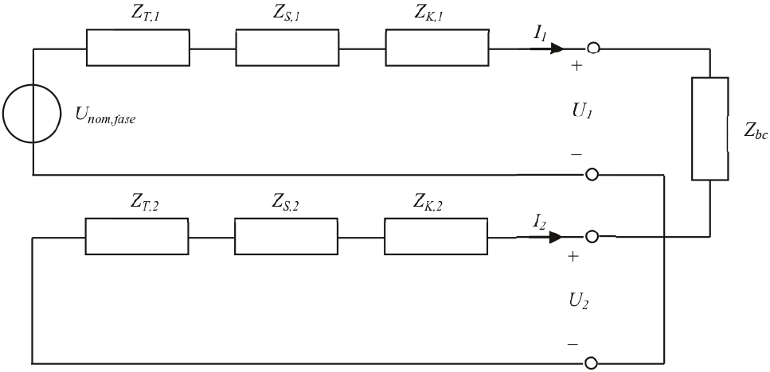In the network, the components are the same as those in figure 11.5. In the equivalent circuit, the impedances are equal to:
From the equivalent circuit, the currents of the component networks can be derived:
[ |
11.23 |
] |
Moreover, it isI2=–I1. From this, the voltages followU1enU2:
[ |
11.24 |
] |
Thus, the factor for the asymmetry is equal to:
[ |
11.25 |
] |
The situation calculated above does not meet the requirements of the Grid Code (2%).
Asymmetry results in a decrease in the load capacity of a cable. This can particularly occur in low-voltage networks. With any deviation from the three-phase symmetry, a current will flow through the return conductors, resulting in additional loss. Figure 11.19 shows a low-voltage cable with a three-phase load of 3 x 80 A at a cos(φ) of 1. The total load power is then 55 kVA. The low-voltage network is supplied via a 400 kVA distribution transformer from a sufficiently strong network supply.
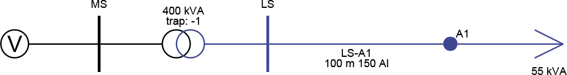In the calculation, for simplicity, the impedances of the network supply and the transformer are disregarded. The reactances are also disregarded in this example. The data for the low-voltage cable are then (at a temperature of 20 °C):
| Rfase | 0.0206 Ω |
| Rnul | 0.0206 Ω |
| Rscherm | 0.0387 Ω |
| Inom | 240 A |
If the load is neatly distributed in a three-phase symmetrical manner, the loss over the low-voltage cable is:
[ |
11.26 |
] |
If the load is connected to one phase, the load current returns via the neutral conductor and the shield, and the loss over the low-voltage cable is the sum of the loss in the conductor and the return:
[ |
11.27 |
] |
The total loss with a single-phase load is therefore five times greater than if the same power were supplied via three phases. This calculation still assumes a conductor temperature of 20°C. In reality, the temperature is higher because, at this current, a conductor of the cable is 100% loaded. As a result, the resistances are higher, and the loss is even greater.
If the load is connected to three phases but is not symmetrically distributed across the three phases, the loss is equal to the sum of the losses in the three conductors and the return. In the following example, the currents over the three phases are distributed as follows:cos(φ)=1):
[ |
11.28 |
] |
From this, the equivalent impedances of the load can be determined. These are respectively:
R1= 2,888 Ω, R2= 1,925 Ω, R3= 5,775 Ω
In a three-phase symmetrical voltage system, the complex currents can be determined from this:
[ |
11.29 |
] |
The return current is equal to the negative sum of all phase currents:
[ |
11.30 |
] |
The loss over the cable is ultimately:
[ |
11.31 |
] |
In this case, the loss is 33% greater than if the power were symmetrically distributed over the three phases. This demonstrates that deviation from three-phase symmetry leads to extra currents in the return conductors, additional loss in the system, and furthermore, a reduced load capacity of the cables. One of the possibilities to remedy asymmetry is the application of a neutral point transformer, as described in Chapter 8. Other methods are also described in the literature (Cobben, 2009).

In all Western European networks, the voltage has a frequency of 50 Hz. Harmonic distortion is referred to when the voltage is not purely sinusoidal but distorted. The voltage can be described as a summation of the 50 Hz base and sinusoidal signals of other frequencies. In most cases, these are integer multiples of 50 Hz, also known as higher harmonics. Possible consequences of harmonic distortion include extra energy losses, failure of electronic equipment, and overloading of neutral conductors. Therefore, the Grid Code sets limits on the total harmonic distortion. A measure for harmonic pollution is the Total Harmonic Distortion (THD). According to the Grid Code, the following must apply for harmonics in low-voltage (LV) and medium-voltage (MV) networks up to 35 kV:
Regarding the voltages of the harmonics whose frequencies are integer multiples of the nominal frequency, the regulator bases its standards on EN 50160. Table 11.6 provides an overview of the maximum allowable values for individual harmonic voltages up to and including the 25th harmonic. For harmonics with an order number higher than 25, no values are given because they are normally small and unpredictable due to resonance effects.
Odd harmonics |
Even harmonics |
||||
No multiples of 3 |
Multiples of 3 |
||||
Order h |
Relative voltage |
Order h |
Relative voltage |
Order h |
Relative voltage |
5 |
6% |
3 |
5% |
2 |
2% |
7 |
5% |
9 |
1.5% |
4 |
1% |
11 |
3.5% |
15 |
0.5% |
6...24 |
0.5% |
13 |
3% |
21 |
0.5% |
||
17 |
2% |
||||
19 |
1.5% |
||||
23 |
1.5% |
||||
25 |
1.5% |
||||
Figure 11.21 illustrates the influence of a harmonic component of 250 Hz (the fifth harmonic) with an amplitude of 20% of the amplitude of the 50 Hz fundamental component of the mains voltage. The left graph shows the two harmonic components (50 and 250 Hz) and the right graph shows the resulting harmonically distorted voltage. Such a disturbance is, according to the Grid Code, not permissible.
Harmonic distortion is caused by non-linear loads. The main source of harmonic pollution is power electronics. Nowadays, these can be found in many devices, such as rectifiers for computers, televisions, or control cabinets for electric motors. Energy-saving lamps, fluorescent lamps, and inverters for solar panels also cause higher harmonics in the electrical network.
Harmonic currents cause problems both in the grid and for the connected users. The consequences and solutions are different for each situation and must be addressed individually. For example, measures that reduce the effects of harmonics within an installation can have a negative impact on the harmonics in the grid. Harmonic currents and voltages can lead to overloading of neutral conductors, transformers, capacitors, as well as overheating of asynchronous motors and unexpected shutdowns due to protections.
There are various methods to reduce harmonic distortion, such as using passive filters for a specific frequency and active filters.
A distorted alternating current or alternating voltage can be mathematically described as a sum of a direct current component and an infinite series of cosine components, whose frequencies are integer multiples of the fundamental frequency (Fourier analysis). If T is the period of the signal x(t), the frequency is: f = 1/T. The periodic signal x(t) can then be written as:
[ |
11.32 |
] |
with:ω=2πf
The coefficientschtogether form the spectrum of the signalx(t). They are the amplitudes of the higher harmonics, each of which has its own phase anglephihhave.
Figure 11.22 shows the composition of a signal from its harmonic components. The displayed signal consists of a fundamental harmonic, a third harmonic, and a fifth harmonic. All other harmonic components have an amplitude of zero. The phase angles of all harmonic components are zero. The amplitudes of the harmonic components are:
If the third harmonic is removed in figure 11.22, the signal from figure 11.21 is obtained.
It is common to display the harmonic components of a signal in a histogram. This display is called the harmonic spectrum or frequency spectrum. Figure 11.23 illustrates the spectrum of the signal from figure 11.22. The fundamental harmonic is also depicted in the spectrum. This is kept at 100% but is not always shown in the spectrum. Usually, only the amplitudes of the higher harmonics are displayed. Display of the phase angleφhis only important for the reconstruction of the waveform and for performing harmonic load flow calculations.
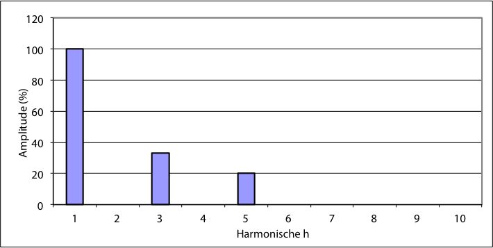The RMS value of a harmonic current can be calculated by summing the squares of the amplitudes of the harmonic components.
[ |
11.33 |
] |
With:Ih: the RMS value of the h-th harmonic component of the current, in A
The Total Harmonic Distortion (THD) is a measure of the total harmonic distortion. It is calculated in relation to the fundamental harmonic as follows:
[ |
11.34 |
] |
The Total Harmonic Distortion can also be calculated in relation to the RMS value of the signal:
[ |
11.35 |
] |
From equations 11.33 and 11.34 follows an alternative method to calculate the RMS value of the current:
[ |
11.36 |
] |
If the fundamental harmonic of the current in figure 11.22 and figure 11.23 has an RMS value ofIA, the depicted harmonic signal has an RMS value of:
Irms= I⋅√(12+0.332+0.22)= I⋅1.07 A.
The THD in relation to the fundamental harmonic is then:THDI= √(0.332+0.22) / 1=0.39
and related to the RMS value:THDrms,I= √(0.332+0.22) / 1.07 = 0.36
Due to the harmonic currents, harmonic voltages are generated in the network. The RMS values are calculated in the same way as for the currents:
[ |
11.37 |
] |
With:Vh: the RMS value of the h-th harmonic component of the phase voltage in V
The Total Harmonic Distortion is a measure of the total harmonic distortion of the voltage and can be calculated in the same way as for the currents:
[ |
11.38 |
] |
From equations 11.37 and 11.38, an alternative method to calculate the RMS value of the voltage follows:
[ |
11.39 |
] |
The active power of a signal, which contains higher harmonics, is per phase:
[ |
11.40 |
] |
With:
| Vh | the effective value of the harmonic phase voltage in V |
| Ih | the effective value of the harmonic current in A |
| φh | the angle between the voltage vector and the current vector in radians |
The reactive power of a signal, in which higher harmonics are present, is defined per phase as:
[ |
11.41 |
] |
The termQ1is the known reactive power of the 50 Hz component. The right term (the summation) in equation 11.41 represents the contribution of the higher harmonics to the total reactive power. This definition of reactive power is still valid in a purely sinusoidal signal where no higher harmonics are present, because in that case the terms fromh=2do not contribute.
The apparent power is defined as the product of the RMS values of the current and the voltage:
[ |
11.42 |
] |
In equation 11.42, the RMS values are calculated using formulas 11.33 and 11.37. It turns out that for signals distorted by higher harmonics, the well-known relationshipS =√(P2+ Q2)between apparent, active, and reactive power no longer holds. The difference is caused by the interaction between the individual harmonic components of voltage and current. This difference is called distortion power.Dbe calculated. With this definition, the apparent powerScan also be described as a function of the active powerP(from equation 11.40), the reactive powerQ(from equation 11.41) and the distortion powerD:
[ |
11.43 |
] |
The reactive power of harmonically polluted signals thus consists of three components:
The quotient of the active power and the apparent power is defined as the power factor (total power factor). For a purely sinusoidal signal, the power factor is equal to cos(φ), so:P = S⋅cos(φ)This cos(φ) is also known as the fundamental displacement factor. However, in a signal contaminated with harmonics, the power factor pertains to the total signal, including all higher harmonics. Therefore, in harmonically distorted signals, the power factor is not equal to the well-known cos(φ), which only pertains to the fundamental harmonic.
Using a capacitor, only the 50 Hz component of the reactive power can be compensated. The componentDis influenced by a capacitor but cannot be compensated by it. If capacitors are installed to compensate for the total reactive powerQcompensate, the maximum achievable power factor is equal to:
[ |
11.44 |
] |
When measuring a signal contaminated with harmonics, only an instrument capable of measuring the true RMS value will suffice. There are also instruments that rely on the average value of the signal, but these are calibrated for pure sinusoidal signals, so they will measure a value that is too low in the presence of strong harmonic distortion (Copper, 2002). For example, an instrument based on the average value might indicate 0.61 A for the power supply current of a PC, while an instrument based on the true RMS value would indicate 1 A. The response of an average value meter to a single-phase rectifier is 40% too low. If one relies on the average value, there is a risk that power lines may become overloaded in the presence of strong harmonic distortion.
A frequency spectrum can be determined from the grid, which describes the impedance at a specific point as a function of frequency. This can be used to assess whether pollution with higher harmonics can lead to undesirable effects. The impedance of a component in the grid that has an inductive or capacitive part is highly dependent on the frequency. The impedance of a coil, neglecting the resistance, is:
| [ Ω ] | [ |
11.45 |
] |
With:L: induction, inH
The impedance of a capacitor is:
| [ Ω ] | [ |
11.46 |
] |
With:C: capacitance, inF
The resistance of components is also dependent on frequency, among other things due to the skin effect, which causes the current to flow more on the surface of a conductor as the frequency increases. As a result, the resistance increases at higher frequencies.
In an electrical grid, resistors, inductors, and capacitors are present. Where inductors and capacitors occur together, resonance can occur. The resistance in the resonance circuit has a damping effect on this. A measurement or calculation of the network impedance for all possible frequencies gives an impression of the resonances. If parallel resonance occurs at a certain location in the grid, the impedance is high for a specific frequency. If a current with the resonant frequency flows, the harmonic voltage can become high.
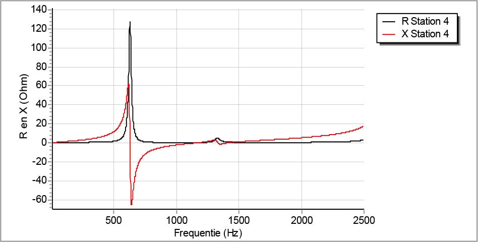Figure 11.24 shows an example of a random impedance-frequency spectrum of a 10 kV network. According to the figure, parallel resonance occurs at the sample location in this network at a frequency of 630 Hz. This is evident because the resistance has a peak value at that frequency and the reactance graph intersects the horizontal axis. A second, less pronounced, resonance point occurs at a frequency of approximately 1330 Hz.
Although the amplitude of higher harmonic signals decreases significantly with increasing frequency, it is possible for a harmonic with the same frequency as a resonance circuit present in the network to occur, which can cause an undesirable increase in voltage or current.
Harmonic currents can be modeled using the component networks (see chapter 7). The fundamental harmonic of a symmetrically loaded symmetrical network is the regular 50 Hz current, and it flows only through the normal component network.
In a three-phase system, the voltages of the three phases are shifted by 120 degrees relative to each other. As a result, the sum of the three fundamental harmonic phase currents is zero, and no current flows through the neutral conductor. Due to the 120-degree phase shift of the fundamental harmonic, the third harmonic component is also shifted by 120 degrees from the fundamental harmonic. However, because three periods of the third harmonic wave fit into one period of the fundamental harmonic, this 120 degrees corresponds to 360 degrees of the third harmonic. Consequently, the sum of the third harmonic components of the three phases is no longer zero, resulting in a return current through the neutral conductor that is equal to the sum of the three third harmonic components.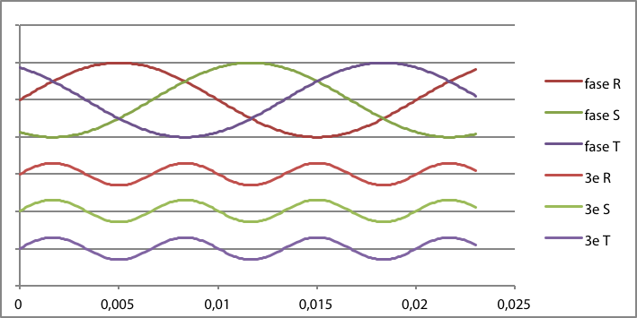
Figure 11.25 illustrates this for the three fundamental harmonic phases R, S, and T and their respective third harmonics, with the zero crossings marked.
The third harmonic current flows through the homopolar network. However, it can only flow if there is a return path for the current. Specifically, in low-voltage networks equipped with neutral conductors, third harmonic currents can occur. In most medium-voltage networks without neutral conductors, third harmonic current does not occur.
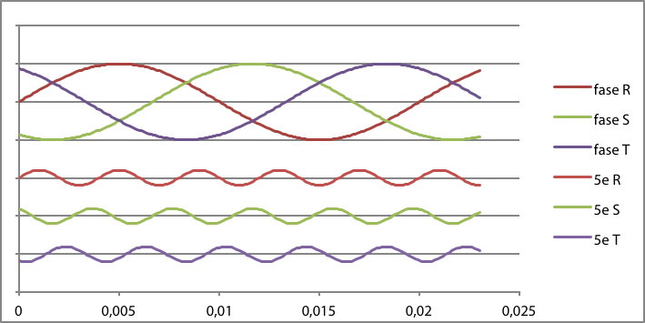The fifth harmonic current, finally, flows through the inverse network. This is evident in figure 11.26, as the phase sequence of the fifth harmonic is R-T-S, while the fundamental harmonic phase sequence is R-S-T.
Three sequences describe in which component network the entire odd harmonics occur:
In addition to odd harmonics, even harmonics can also occur. However, in symmetrical waveforms, the amplitudes of the even harmonics are zero. For this reason, even harmonics are not often found in electrical systems. Even harmonics are undesirable because they cause asymmetry between the positive and negative half-wave in voltage and current waveforms. Non-linear loads with asymmetric current-voltage characteristics are sources of even harmonic currents. Examples include arc furnaces and rectifiers with a single diode, which only rectify a half-wave. The inrush current in a transformer also contains a large share of the second harmonic. Even harmonics produce more adverse effects in power supply systems than odd harmonics. Therefore, the requirements for even harmonics in the international standard EN 50160, as summarized in Table 11.6, are stricter than for odd harmonics (Barros, 2006).
Harmonics are generated by non-linear loads. In general, a load that is a source of harmonic pollution can be modeled as a combination of a linear load and a number of current sources, one for each harmonic frequency. Figure 11.27 shows the equivalent circuit of a non-linear load. In the equivalent, only odd harmonics are injected. The amplitudes of the current sources are described in the frequency spectrum of the load currents. The phase angles can differ from zero and are important for reconstructing the waveform, but are usually not provided.
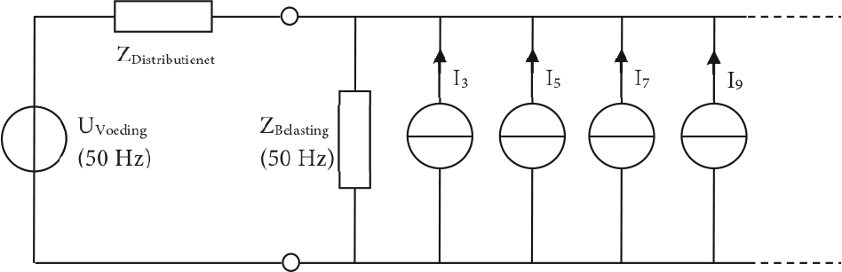The harmonic currents injected into the distribution network by the non-linear load close through the linear load impedance and all other paths in the distribution network. This results in harmonic voltages across all impedances through which these harmonic currents flow. Most impedances in the distribution network are relatively small, so the harmonic voltages will be quite low. However, if parallel resonance occurs due to combinations of inductance and capacitance, the voltage at resonant frequencies can become quite high.
Non-linear loads can be both small single-phase and large three-phase loads. Single-phase non-linear loads include, among others:
Electronic devices are powered via a transformer and a rectifier that charges a capacitor, or by a switching power supply. In the case of a rectifier, current only flows if the voltage of the capacitor is lower than the supply voltage. When the rectifier power supply is loaded, the capacitor must be charged every half cycle to obtain a direct current with little ripple. In a rectifier power supply, the amplitudes of the harmonic currents decrease inversely with the frequency. A switching power supply is regulated with a pulsating current, causing the amplitudes of the high frequencies to be greater than those in a rectifier power supply.
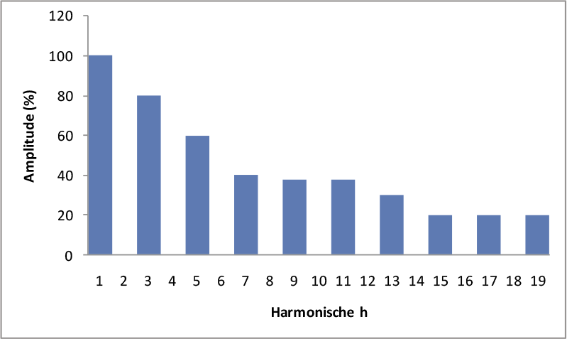In addition to rectifiers, ballasts for fluorescent lighting are sources of higher harmonics with significant amplitudes. Compact fluorescent lamps are also sources of harmonic pollution. Figure 11.28 shows the frequency spectrum of the harmonic currents of an 11 W compact fluorescent lamp (Cobben, 2009).
Examples of non-linear three-phase loads are:
Speed-controlled drives, UPS systems, and converters are usually based on a three-phase six-pulse rectifier. These rectifiers contain six diodes, each providing a pulse per phase every half cycle. Figure 11.29 shows the circuit diagram of the six-pulse rectifier.
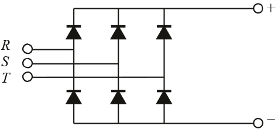The currents feeding the six-pulse rectifier are more block-shaped than sinusoidal. Figure 11.30 shows the three phase currents IL1, IL2, and IL3 as a function of time. The currents through the neutral conductor and the PE are zero, as they are not connected to the rectifier.
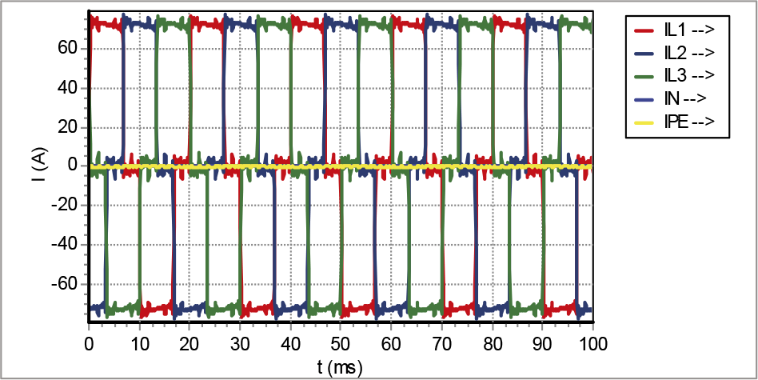The current of one phase of the rectifier can be described as a series of cosine components according to equation 11.32 as follows:
[ |
11.47 |
] |
with:
| ω | 2πf |
| Idc | gelijkstroom |
In the current according to equation 11.47, there are no third harmonics and odd multiples thereof. This is consistent with the fact that this rectifier does not have a neutral point and thus no homopolar system where the third harmonic current can flow. The current only has harmonics of the order6k±1.waarbijkis an integer. The harmonics of the order6k+1, are present in the normal system and the harmonics of the order6k–1, are present in the inverse system.
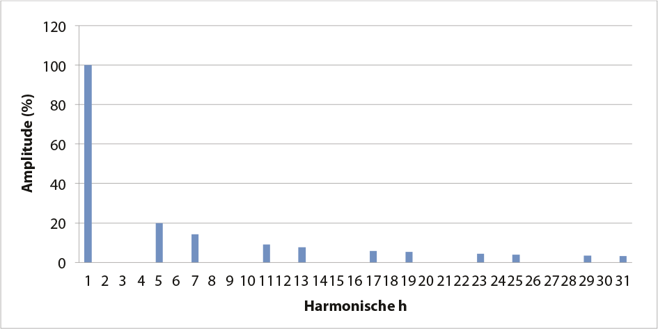Figure 11.31 shows the frequency spectrum of the current flowing in the connection between the distribution network and the six-pulse rectifier (Arrillaga, 1985). The amplitudes of the harmonic currents are inversely proportional to the harmonic order number. For example, the amplitudes of the fifth and seventh harmonic currents are 20% and 14% of the nominal current, respectively.
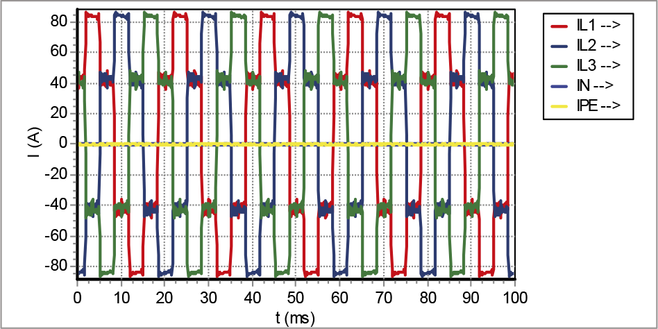If the six-pulse rectifier is fed by a Yd5 transformer, the primary alternating current flowing through one phase is equal to the sum of two secondary currents that are 120 degrees out of phase with each other. Figure 11.32 shows the waveform of the primary currents through the three phases.
The primary alternating current for one phase can be described as follows (Dixon, 2001):
[ |
11.48 |
] |
with:
| ω | 2πf |
| Idc | gelijkstroom |
The difference between the current of the six-pulse rectifier according to equation 11.47 and the current when using a Yd5 transformer according to equation 11.48 is that the sign of the 5th and 7th harmonics is opposite. The same applies to the sign of the 17th and 19th harmonics. In general, this applies to all harmonics of the order6k±1,waarbijkis an odd integer.
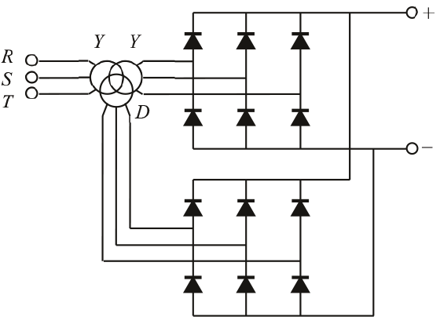By now using two identical six-pulse rectifiers and feeding them through a Yy0d5 three-winding transformer, as shown in figure 11.33, the currents (described by equations 11.47 and 11.48) are added on the primary side. As a result, the harmonics with opposite signs cancel each other out. In this case, these are the harmonics of the order6k±1,waarbijkan odd integer, such as the 5th, 7th, 17th, and 19th harmonics. The primary current of the three-winding transformer can be described as follows:
[ |
11.49 |
] |
This series contains only harmonics of the order12k±1,waarbijkis an integer. The system is called a twelve-pulse rectifier. The harmonics of the order6k±1,waarbijkis an odd integer, flow only between the two secondary transformer windings and do not flow to the supply network. Figure 11.34 shows the waveform of the currents through the three phases of the twelve-pulse rectifier. It is clearly visible that this waveform, compared to the current of the six-pulse rectifier, already better approximates the sine wave.

This system is more expensive than the six-pulse rectifier, but it provides a significant reduction in harmonic distortion. For high power applications, it is often required that these be supplied via a twelve-pulse rectifier. Figure 11.35 shows the frequency spectrum, clearly indicating that the first harmonic is the 11th, with an amplitude of 9%.
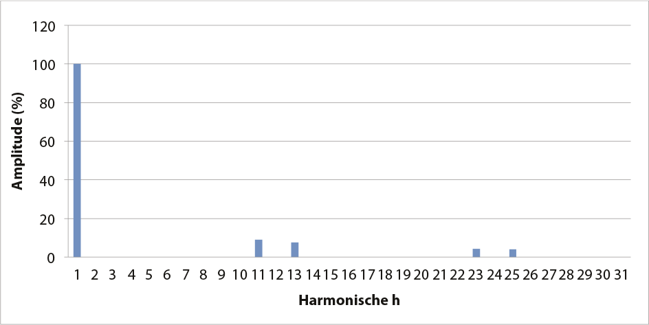At the beginning of this paragraph, several potential problems caused by harmonics have already been indicated. Harmonic currents and voltages can lead to:
As stated in paragraph 11.6.4, a harmonic current, whose order number is an integer multiple of 3, leads to a current in the neutral conductor. This problem only occurs in networks with a neutral conductor, where the loads are connected between the phases and neutral, such as in low-voltage networks. Particularly in installations where switching power supplies or fluorescent lighting are used, consideration must be given to the return current, which can become greater than the phase current. An example illustrates the influence of harmonic currents on the neutral conductor. The example concerns a network where the load consists entirely of compact fluorescent lamps, whose frequency spectrum is shown in figure 11.28. In the example, the 19th harmonic is the highest. The current strength of the fundamental harmonic is given:I1= 80 ATable 11.7 provides the details of the calculation of the RMS values of the current through the phases and the current through the return conductor. The calculation follows equation 11.33.
h |
Ih(%) |
Ih(A) |
Ik2(A)2) |
Iretour(A) |
Iretour2(A2) |
1 |
100 |
80.0 |
6400 |
||
3 |
80 |
64.0 |
4096 |
192 |
36864 |
5 |
60 |
48.0 |
2304 |
||
7 |
40 |
32.0 |
1024 |
||
9 |
38 |
30.4 |
924 |
91 |
8317 |
11 |
38 |
30.4 |
924 |
||
13 |
30 |
24.0 |
576 |
||
15 |
20 |
16.0 |
256 |
48 |
2304 |
17 |
20 |
16.0 |
256 |
||
19 |
20 |
16.0 |
256 |
||
–––––– + |
–––––– + |
||||
17016 |
47485 |
||||
Irms: |
130 |
Irms: |
218 |
According to paragraph 11.6.4, only the currents of the 3rd, 9th, and 15th harmonics flow through the neutral conductor, which in this example forms the only return path. This is because the currents of the fundamental frequency in the three phases make an angle of 120 degrees relative to each other. As a result, all harmonic currents with an order number of 3 or an integer multiple thereof have the same phase angle relative to each other, as shown in figure 11.25. These higher harmonic currents then flow through the return conductor with the same phase angle. Consequently, each phase current of the 3rd, 9th, and 15th harmonics flows three times as strongly through the return conductor. The results of the calculation are summarized in the diagram of figure 11.36.
The harmonic load flow calculation provides insight into the RMS values of the currents and voltages resulting from the operating situation with harmonic pollution. The current through the phase conductors consists of the fundamental harmonic plus all harmonic currents. The current through the neutral conductor consists of three times the harmonics whose order number is an odd multiple of three. Since the amplitude of the third harmonic current is 80% of the fundamental harmonic, the current through the neutral conductor is greater than the current through the phase conductors. This must be taken into account when sizing low-voltage installations.
Eddy current losses are an important component of the copper losses in a transformer and are dependent on the square of the harmonic order number. This has significant implications for the losses in transformers that, for example, power large computer systems. This can be accounted for by means of aK-factor, which is specified for each transformer (see paragraph 11.6.7).
The impedance of a capacitor is inversely proportional to the frequency (equation 11.46). As a result, power factor correction capacitors will draw a large current in the presence of a significant amount of high harmonics. This can cause them to become damaged. Additionally, capacitors can resonate with the inductance in the network, leading to the generation of large harmonic voltages.
Harmonic voltages cause eddy current losses in asynchronous motors similar to those in transformers. Moreover, the harmonic fields in the stator have a counteracting effect on the rotation of the rotor. Harmonic currents induced in the rotor lead to additional rotor losses.
Ground fault circuit interrupters can unexpectedly trip because they respond to capacitive currents caused by any present capacitors. Additionally, fuses are extra heated by the higher harmonic currents, causing them to trip earlier than expected.
The losses in transformers consist of magnetization losses in the transformer core and resistance losses and eddy current losses in the windings. Of all these losses, special attention must be paid to the eddy current losses in the presence of higher harmonics, as these are quadratically dependent on frequency. The increase in losses is closely related to the harmonic spectrum of the load current.
Due to the higher harmonic currents, transformers are subjected to additional stress. As a result, the maximum load of the transformer must be reduced to prevent a shortened lifespan or damage due to excessive temperatures. The necessary load reduction can be estimated using the so-calledK-factor and the reduction factorKThese factors are indicative of the amount of harmonics in the current and can be measured. For transformers, the value of theK-factor specified.
The eddy current loss for a specific harmonic current is:
| (W) | [ |
11.50 |
] |
With:
| PEC,h | eddy current loss for harmonics of orderh |
| PEC,0 | eddy current loss at the fundamental frequencyf |
| Ih | amplitude of the current at harmonics of orderh |
| Irms | RMS value of the current (formula 11.33). |
The total eddy current loss is calculated by summing the eddy current losses for all harmonics and for the fundamental frequency:
| (W) | [ |
11.51 |
] |
There are two methods to account for eddy current losses when designing a transformer. The first method originates from the United States and calculates aK-factor from the harmonic spectrum, with which a suitable transformer for this value is selected. The second method is applied in Europe and calculates the load reduction (de-rating) of the transformer so that the transformer is not overloaded beyond its specifications. This load reduction is indicated by the reduction factor.K. TheK-factor and the reduction factorKare not calculated in the same way and the results are numerically different (Copper, 2000).
DeK-factor is a multiplication factor for calculating the increase in eddy current losses. This factor is calculated as follows:
[ |
11.52 |
] |
DeK-factor is measured by commercially available measuring instruments and says more about the load than about the transformer. TheK-factor of a PC is, for example, 11.6. Once theK-factor for the load is known, the appropriate transformer can be selected by choosing one whose manufacturer-specifiedK-value is greater than the measured value. Transformers are available with standardK-values in the range of: 4, 9, 13, 20, 30, 40, 50.
The reduction factorKis a factor for calculating the reduction of transformer load. This factor is calculated as follows:
[ |
11.53 |
] |
With:
| e | ratio between the eddy current loss at the base frequency and the Ohmic loss, both at the reference temperature; the value is specified by the manufacturer and ranges between 0.05 and 0.1 |
| q | constant that strongly depends on the construction of the transformer; the value is specified by the manufacturer and ranges between 1.5 and 1.7 |
| h | harmonic order |
| Ih | amplitude of the current at harmonics with orderh |
| Irms | RMS value of the current (formula 11.33) |
| I1 | amplitude of the current at the fundamental frequency. |
The advantage of a transformer that is built for a specificK-factor compared to the application of an oversized standard transformer with a reduction factor is that construction choices keep the eddy currents low. As a result, the transformer does not need to be oversized. An oversized transformer is less efficient and harder to protect selectively. In a generously sized transformer, a relatively high inrush current occurs, which can lead to unwanted disconnection.
As an example, both methods are elaborated for a load that is fed from a rectifier. Figure 11.31 shows the frequency spectrum of the current in the connection between the distribution network and the six-pulse rectifier. TheKThe K-factor can be calculated using a spreadsheet. The RMS value of the current, which is calculated using the second and third columns, is utilized in this process. The fourth, fifth, and sixth columns are used to determine the summation of equation 11.52.
h |
Ih/I1 |
(Ih/I1)2 |
Ih/Irms |
(Ih/Irms)2 |
(Ih/Irms)2x h2 |
1 |
1,000 |
1,000 |
0.962 |
0.925 |
0.925 |
5 |
0.200 |
0.040 |
0.192 |
0.037 |
0.925 |
7 |
0.143 |
0.020 |
0.138 |
0.019 |
0.927 |
11 |
0.091 |
0.008 |
0.088 |
0.008 |
0.927 |
13 |
0.077 |
0.006 |
0.074 |
0.005 |
0.927 |
17 |
0.059 |
0.003 |
0.057 |
0.003 |
0.931 |
19 |
0.053 |
0.003 |
0.051 |
0.003 |
0.938 |
--------- |
--------- |
||||
Sum: |
1,081 |
Sum: |
6,500 |
||
Irms: |
1,040 |
The sum of the last column is equal to the value of theK-factor. In this example, a standard transformer with aK-value of 9 or higher to feed the six-pulse rectifier.
In the second method, the load reduction of the transformer is calculated. Here, just like in table 11.8, the RMS value of the current is used, which is calculated with the second and third columns. The fourth and fifth columns are used to determine the summation of equation 11.53 (under the square root). A value of q equal to 1.7 is assumed here..
h |
Ih/I1 |
(Ih/I1)2 |
hq |
(Ih/I1)2x hq |
1 |
1,000 |
1,000 |
||
5 |
0.200 |
0.040 |
15,426 |
0.617 |
7 |
0.143 |
0.020 |
27,332 |
0.559 |
11 |
0.091 |
0.008 |
58,934 |
0.488 |
13 |
0.077 |
0.006 |
78,290 |
0.464 |
17 |
0.059 |
0.003 |
123,527 |
0.430 |
19 |
0.053 |
0.003 |
149,239 |
0.419 |
--------- |
--------- |
|||
Sum: |
1,081 |
Sum: |
2,977 |
|
Irms: |
1,040 |
If furthermore a value ofeequal to0.1, then the reduction factor becomesKdetermined as follows:
[ |
11.54 |
] |
As a result, the transformer may be loaded with a maximum of100/K = 89%be loaded.
There are several methods to reduce harmonics in a network. Each method has its advantages and disadvantages. Some methods are:
The first method is based on the principle that the effects of harmonic currents in a network with low network impedance have less severe consequences for the pollution of the network voltage. If that does not help, it can be considered to connect the polluting load to a separate 'dirty' network, which may be fed by a separate transformer.
Passive filters can block or pass harmonic currents. Blocking is done with a notch filter, consisting of a parallel circuit of an inductor and a capacitor. The impedance of such a filter is high for currents with the resonant frequency. A notch filter can be applied in series with the supply line of an installation. Additionally, the pass or suck filter consists of a series circuit of an inductor and a capacitor. The impedance of such a filter is very low for currents with the resonant frequency. These filters are applied between phases or between phases and neutral and can filter out harmonics of specific resonant frequencies. Multiple filters for various resonant frequencies can be applied in parallel if necessary.
Active filters measure the harmonic distortion in the load current and inject the higher harmonic currents in such a way that the power supply from the electrical grid sees as much of the fundamental frequency current as possible. These filters can be effectively applied in situations where the load varies greatly and frequently, as it is not feasible to use passive filters in those cases. In practice, the magnitude of the higher harmonic currents is reduced by 90% with this method (Copper, 2002-2).
The modeling of components has been extensively described in the literature (Acha, 2001; Arrillaga, 1997). There are various ways to do this, depending on the level of detail and asymmetry in the network. It can also go so far that the behavior of the models is influenced by the harmonic distortion in the network. In most practical situations, it is sufficiently accurate to choose a model based on a symmetrical three-phase system with three-phase symmetrical harmonic sources. In this case, only the odd harmonics are evaluated (section 11.6.4).
The non-linear sources are modeled with current sources for each specified harmonic current injection. These are described in section 11.6.5. All network components, such as cables, loads, motors, capacitors, and inductors, have a model for higher frequencies and are described with series and shunt impedances.
The overhead connection and the underground cable are modeled using the long transmission line model. This model is also referred to as the distributed parameter model. Figure 11.37 depicts the model as a pi-model consisting of a longitudinal admittance and two transverse admittances.
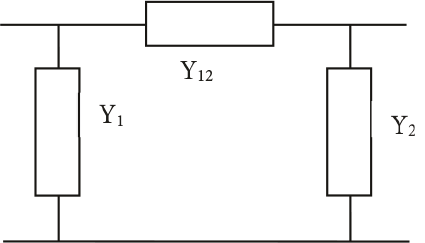The values of the admittances are determined as follows for a specific frequency of orderh:
[ |
11.55 |
] |
WaarinZcthe characteristic impedance is andθthe characteristic angle:
|
|
|
with:
| R | resistance in Ω/km |
| L | self-inductance in H/km |
| G | shunt conductance in S/km |
| C | capacitance in F/km |
| l | length in km |
| h | harmonic order number |
| ω | fundamental angular frequency (2πf) |
The dataR,LenCare the normal parameters of the cable or line during normal operation. The shunt conductance is a measure of the leakage resistance between the conductor and the shield. The leakage resistance is usually very high, making the shunt conductance very small and typically negligible.
The impedance of the transformer is determined as described in chapter 8 (Models). This results in values for the resistanceRT,50) and the reactance (XT,50) at the base frequency. The reactance is linearly dependent on the frequency. The resistance is also dependent on the frequency. Due to the skin effect, the current flows on the outer surface of a conductor. This phenomenon increases at higher frequencies. It is customary to make the resistance proportional to the square root ofhto increase (Arrillaga, 1985). The impedance for a frequency of the orderhis then determined as follows:
[ |
11.56 |
] |
The power supply is modeled with a fixed voltage source behind the short-circuit impedance. The reactance is determined by the inductance and the frequency:
[ |
11.57 |
] |
The capacitor is a shunt element. The value of the admittance is determined by the capacitance or by the nominal reactive power injection. The conductance is assumed to be zero in this case:
[ |
11.58 |
] |
By connecting a coil and a capacitor in series, an R-L-C filter can be created. The impedance can be derived from the filter frequency and the filter quality. The size of the capacitor is given in Mvar or in μF. The basis is the reactive power of the capacitor at the nominal frequency:QcThe resistance and inductance are derived from the filter frequency and the quality factor. The reactance of the capacitor at the base frequency is calculated as follows:
[ |
11.59 |
] |
Herein isUnomthe nominal voltage in kV andhfthe quotient of the filter frequency and the base frequency. The inductance of the coil at the base frequency is calculated as follows:
[ |
11.60 |
] |
The resistance of the filter is determined by the desired quality factor.q. This typically ranges between 20 and 30:
[ |
11.61 |
] |
The impedance of the filter for a harmonic frequency with order numberhis then finally:
[ |
11.62 |
] |
The value of the admittance of the shunt coil is determined from the inductance or from the nominal reactive power consumption. The resistance is assumed to be zero:
[ |
11.63 |
] |
The synchronous machine is a load for the harmonics. The model is (Arrillaga, 1997):
[ |
11.64 |
] |
With:
| RSM,50 | fictitious synchronous machine resistance at base frequency in Ω |
| Xd" | subtransient reactance at base frequency in Ω |
For the synchronous machine, it is assumed that the windings are connected in a delta configuration, so it does not have a neutral point and does not have a model in the homopolar system.
The main field impedance of the asynchronous machine is neglected. Furthermore, empirical values are used, such as the ratio of the stator and rotor resistance with the help of constants a and b. For the machine impedance for harmonics (Arrillaga, 1997), the following applies:
Reactance:
[ |
11.65 |
] |
Resistance for normal network:
[ |
11.65 |
] |
Resistance for inverse network:
[ |
11.65 |
] |
With:
| RSM,50 | total motor resistance with stationary rotor at base frequency in Ω |
| XSM,50 | motor short-circuit reactance at base frequency in Ω |
| a | 0.45 |
| b | 0.55 |
The asynchronous machine is thus one of the few components whose model for the inverse system differs from the normal system. It is assumed that the windings of the asynchronous machine are connected in a delta configuration, so it does not have a neutral point and does not have a model in the homopolar system.
A load that produces harmonic currents causes harmonic distortion in the grid voltage. The extent to which the grid voltage is distorted depends on the nominal power of the load in relation to the short-circuit power of the supplying grid. In the international standard IEC 61000-3-12, this ratio is referred to as the ratio.Rsce:
[ |
11.66 |
] |
With:
| Unom | nominal coupled grid voltage |
| Znet | phase impedance of the supplying grid |
| Iload,nom | nominal current of the load |
A device with a nominal current less than 16 A is tested according to IEC 61000-3-2. If the device complies, it can be connected. For devices with a higher nominal current, but a maximum of 75 A, they are tested according to the IEC 61000-3-12 standard. If these devices comply with the standard, they can be connected if the value of the ratio Rsceis at least 33. At a higher value, larger harmonic currents are allowed. If the ratio is less than 33, the devices can be connected after verifying that the harmonic pollution does not lead to exceeding the EN 50160 standard. For devices with a nominal current greater than 75 A, the impact on harmonic pollution must be further analyzed. More information on this can be found in the literature (Cobben, 2009).
In order to properly present and compare measurement results, a method has been developed (Cobben, 2007), in which the distinct Power Quality components are classified into six levels, ranging from A (very good) to F (very poor). The requirements of the Grid Code lie on the boundary between categories C and D.
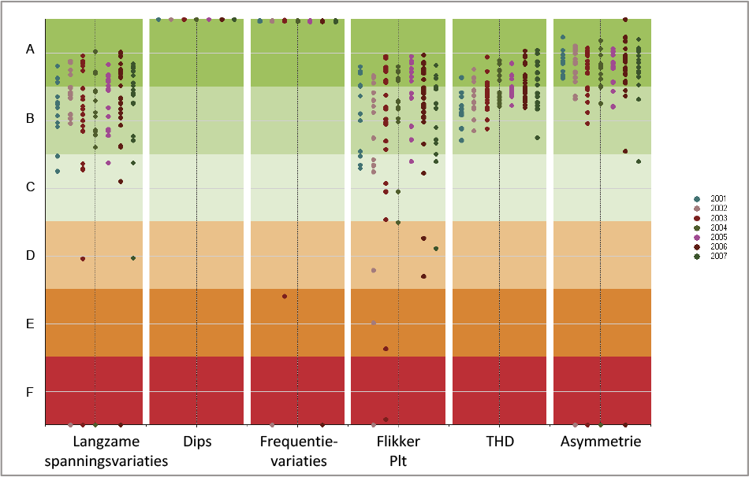Figure 11.38 shows, as an example, the results of a series of measurements at 13 locations from the years 2001 to 2007 (Provoost, 2009). It can be seen that all measurement locations meet the requirements regarding dips, harmonics, and asymmetry, but that some locations score less well in terms of slow voltage variations, frequency, and flicker.
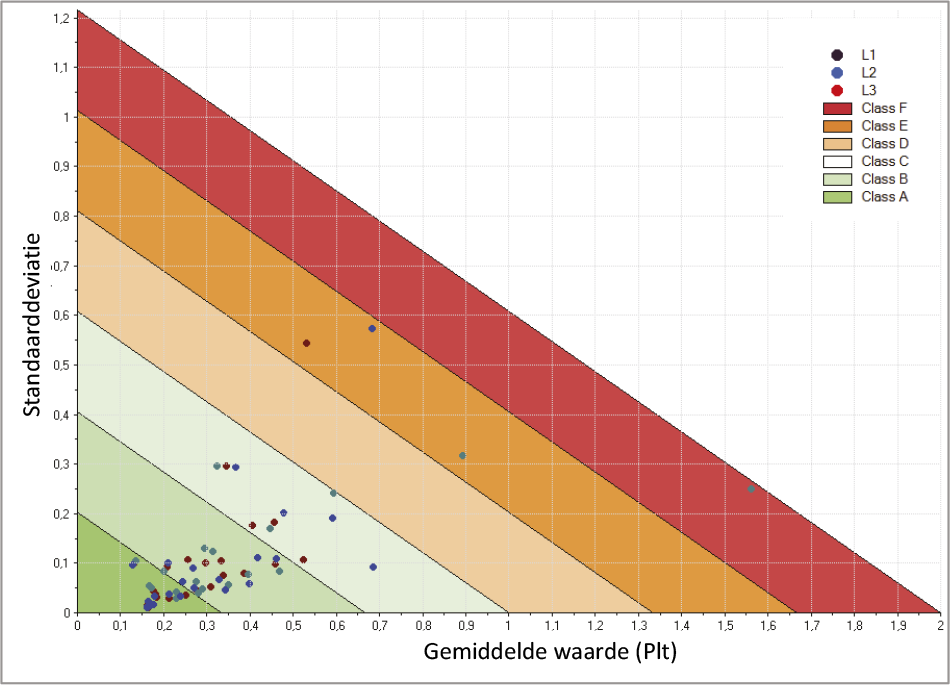For all measurements, average values and standard deviations can be calculated. By plotting the calculated values of the averages and the standard deviations against each other, as shown in Figure 11.39 and Figure 11.40, the Power Quality measurements can be studied in more detail. Figure 11.39 shows the classification of the average values and the standard deviations of the flicker measurements. The higher the average value of the Plt, the smaller the standard deviation should be. The slope of the lines and the division of the areas are determined by the fact that with a 95% probability, all values are smaller than the sum of the average and 1.65 times the standard deviation (Cobben, 2007). Therefore, the middle line between classes C and D has a standard deviation of 0 at an average value of 1 and a standard deviation of 1/1.65 = 0.61 at an average value of 0. Four measurement points in the example of Figure 11.39 fall outside the requirements of the Grid Code.
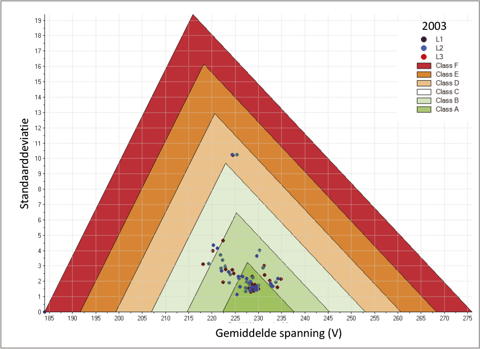Figure 11.40 shows the classification of the average values and standard deviations of the voltage measurements. In this case, the areas are delineated with two diagonal lines because the deviation from the nominal voltage is limited on both the upper and lower sides.
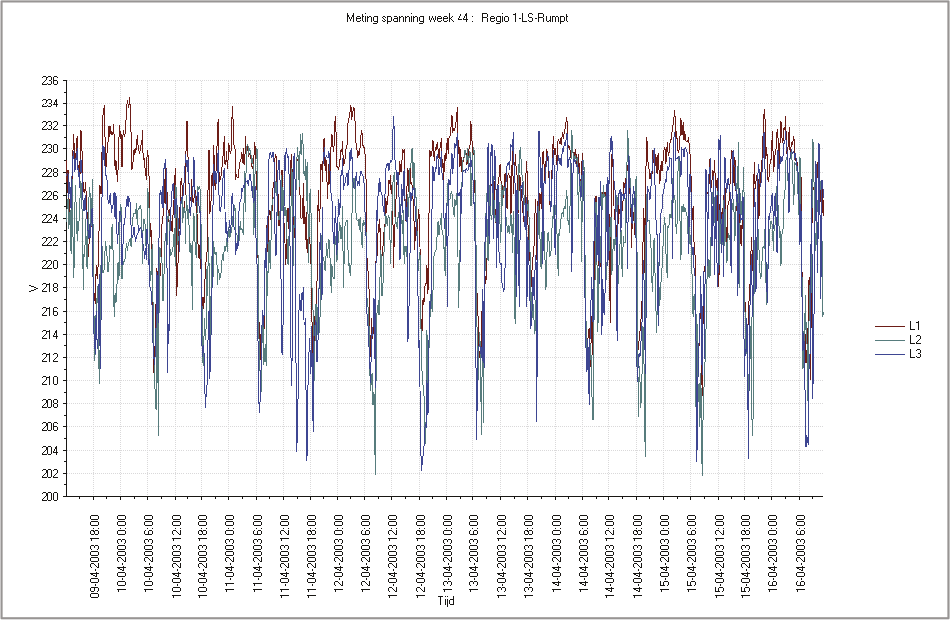If the result of the classification raises questions, further investigation can be conducted using the detailed measurements. Figure 11.41 shows the detailed measurements of the voltages of the three phases at a specific location in an LV network over a requested week. The voltages are displayed in V as a function of time.
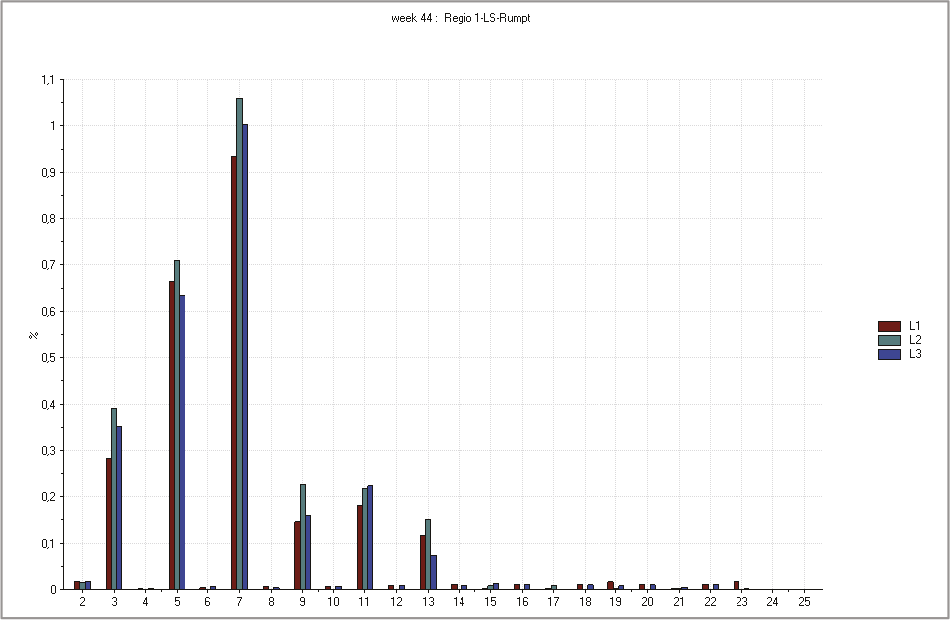Figure 11.42 shows the average values of harmonic distortion over a week, in % of the nominal voltage. The example displays the measurements of the three phases at a specific location in the low-voltage network.
Phase to Phase is onderdeel van Technolution. © 2009-2021